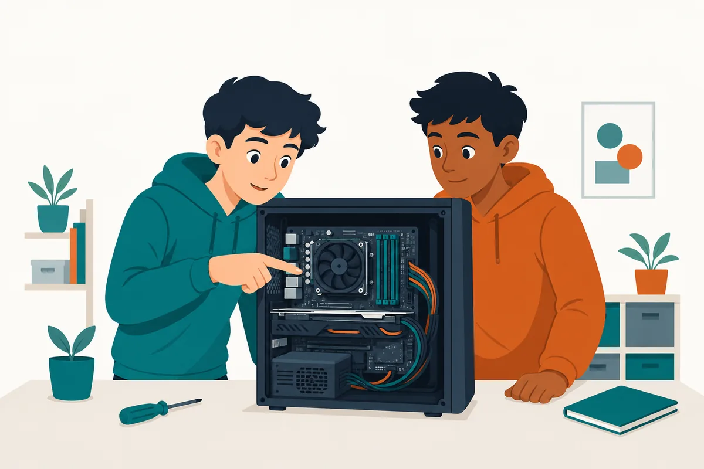
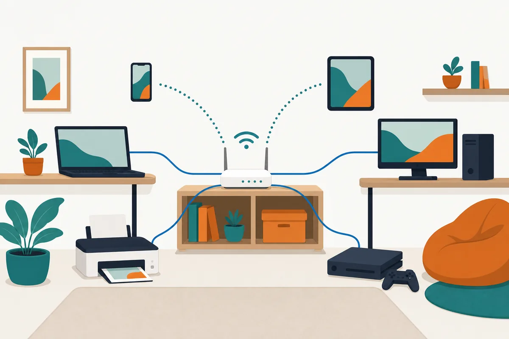

7 klasė · Excel pradžiamokslis
Excel01
1 pamoka. Funkcijos: tegul skaičiuoja Excel
SUM, AVERAGE, MIN, MAX, COUNT, langelių blokas, dažniausios klaidos
Excel02
2 pamoka. Diagramos: kaip skaičius paversti paveikslu
Stulpelinė, skritulinė ir linijinė diagrama, diagramos elementai, kurią diagramą pasirinkti
Excel03
Atsiskaitomasis darbas: nuo duomenų iki diagramos
5 temos: susirask duomenis internete, apskaičiuok funkcijomis, pasirink ir nubraižyk diagramą
8 klasė · Aparatinė įranga

2.101 Kompiuterio aparatinės įrangos sandara Vidinės kompiuterio dalys ir jų funkcijos; žaidimai „Kompiuterio vidus“ ir „Kompiuterių daktaras“ Prievadai02 Kompiuterio išoriniai įrenginiai ir prievadai Įvedimo ir išvedimo įrenginiai, USB, HDMI, eternetas ir kiti prievadai 2.203 Operacinės sistemos ir programinė įranga Kas yra programinė įranga, OS funkcijos, populiariausios OS, programinės įrangos tipai
2.3.104 Kompiuterių tinklai Vietinis, platusis ir belaidis tinklas, tinklo įrenginiai, žvaigždinė, magistralinė ir žiedinė topologijos